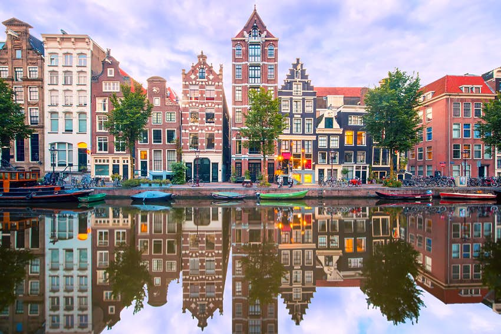
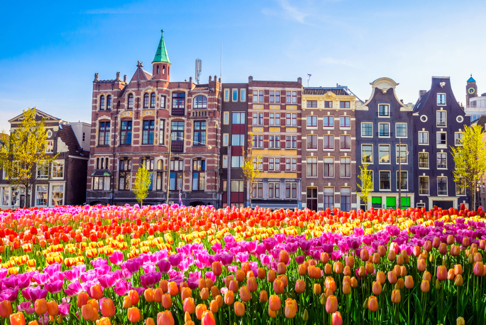

|
Amsterdam is the capital and most populous city of the Netherlands with a population of 872,680 within the city proper, 1,558,755 in the urban area and 2,480,394 in the metropolitan area.[11] Found within the province of North Holland, Amsterdam is colloquially referred to as the "Venice of the North", due to the large number of canals which form a UNESCO World Heritage Site. Amsterdam was founded at the Amstel, that was dammed to control flooding; the city's name derives from the Amstel dam. Originating as a small fishing village in the late 12th century, Amsterdam became one of the most important ports in the world during the Dutch Golden Age of the 17th century, and became the leading centre for finance and trade. In the 19th and 20th centuries, the city expanded and many new neighborhoods and suburbs were planned and built. The 17th-century canals of Amsterdam and the 19–20th century Defence Line of Amsterdam are on the UNESCO World Heritage List. Sloten, annexed in 1921 by the municipality of Amsterdam, is the oldest part of the city, dating to the 9th century. Amsterdam's main attractions include its historic canals, the Rijksmuseum, the Van Gogh Museum, the Stedelijk Museum, Hermitage Amsterdam, the Concertgebouw, the Anne Frank House, the Scheepvaartmuseum, the Amsterdam Museum, the Heineken Experience, the Royal Palace of Amsterdam, Natura Artis Magistra, Hortus Botanicus Amsterdam, NEMO, the red-light district and many cannabis coffee shops. It drew more than 5 million international visitors in 2014. The city is also well known for its nightlife and festival activity; with several of its nightclubs (Melkweg, Paradiso) among the world's most famous. Primarily known for its artistic heritage, elaborate canal system and narrow houses with gabled façades; well-preserved legacies of the city's 17th-century Golden Age. These characteristics are arguably responsible for attracting millions of Amsterdam's visitors annually. Cycling is key to the city's character, and there are numerous bike paths. |
  |